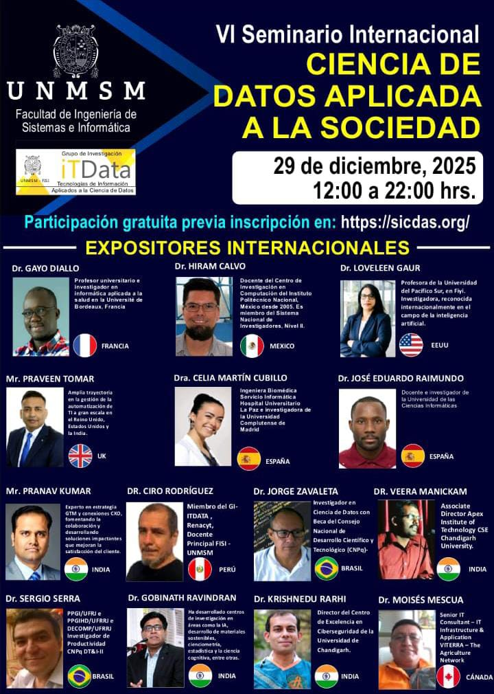

El Grupo de Investigación ITDATA, Decanato, Vicedecanato Académico e Instituto de Investigación de la Facultad de Ingeniería de Sistemas e Informática (FISI) de la Universidad Nacional Mayor de San Marcos (UNMSM) se complace en presentar la organización del VI Seminario Internacional de Ciencias de Datos Aplicada a la Sociedad (SICDAS).
Con el propósito de fomentar y fortalecer el intercambio de experiencias académicas e investigativas entre profesionales y estudiantes de Ingeniería de Sistemas, Ingeniería de Software, Computación e Informática, así como con todos los participantes interesados.
El SICDAS abordará diversos temas dentro de las áreas de conocimiento, incluyendo BIG DATA ANALYTICS, MACHINE LEARNING, DATA MINING, BUSINESS INTELLIGENCE, DATA SCIENCE, OPEN DATA, GOBIERNO DE DATOS y DEEP LEARNING, con enfoque en su aplicación a los desafíos sociales. Se llevarán a cabo las siguientes actividades:
29 de diciembre 2025
Descarga la programación completa del VI Seminario Internacional de Ciencia de Datos Aplicada a la Sociedad (SICDAS).
Participar en el SICDAS te permitirá conocer experiencias y aplicaciones reales de Ciencia de Datos para afrontar desafíos sociales, así como interactuar con investigadores, profesionales y estudiantes del área.
Ponencias sobre Big Data, Machine Learning, Deep Learning y Gobierno de Datos.
Intercambio de ideas y experiencias con la comunidad académica y profesional.
Certificado de participación para los asistentes que completen el registro correspondiente.
Calle Germán Amézaga s/n - Lima
+51 938 345 776
nromanc@unmsm.edu.pe